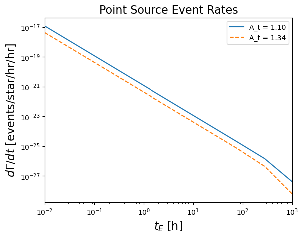

The autoreload extension is already loaded. To reload it, use:
%reload_ext autoreloadThe autoreload extension is already loaded. To reload it, use:
%reload_ext autoreloadSurvey (l:float, b:float, source_dist:float, obs_time:float, cadence:float, survey_area:float, n_sources:int, efficiency:<function <lambda>>, use_mw_source:bool=False, mw_model:LensCalcPy.galaxy.MilkyWayModel=None, m31_model:LensCalcPy.galaxy.M31Model=None, A_t:float=1.34)
A class to represent a survey.
| Type | Default | Details | |
|---|---|---|---|
| l | float | Galactic longitude in degrees | |
| b | float | Galactic latitude in degrees | |
| source_dist | float | Distance to observation source in kpc | |
| obs_time | float | Observation time in hours | |
| cadence | float | Cadence in hours | |
| survey_area | float | Survey area in deg^2 | |
| n_sources | int | Number of sources observed in survey | |
| efficiency | Efficiency of survey | ||
| use_mw_source | bool | False | Use Milky Way as source |
| mw_model | MilkyWayModel | None | |
| m31_model | M31Model | None | |
| A_t | float | 1.34 | Threshold magnification for detection |
m_pbh = 1e-5
f_dm = 1
p = 1
s1 = Survey(l, b, ds, obs_time, survey_area, n_sources=n_sources, survey_area=survey_area, efficiency=lambda t: 0.6, A_t = 1.1)
s2 = Survey(l, b, ds, obs_time, survey_area, n_sources=n_sources, survey_area=survey_area, efficiency=lambda t: 0.6, A_t = 1.34)
# s.add_pbh(m_pbh, f_dm)
s1.add_ffp(p)
s2.add_ffp(p)# plt.loglog(t_es, pbh_rates, label="PBH")
plt.loglog(t_es, ffp_rates1, label=f"A_t = {s1.A_t:.2f}")
plt.loglog(t_es, ffp_rates2, label=f"A_t = {s2.A_t:.2f}", linestyle="--")
plt.xlabel(r"$t_E$ [h]", fontsize=16)
plt.ylabel(r"$d\Gamma/dt$ [events/star/hr/hr]", fontsize=16)
plt.title("Point Source Event Rates", fontsize=16)
plt.xlim(1e-2, 1e3)
# plt.ylim(1e-25, 1e-7)
plt.legend()
plt.show()
# plt.loglog(t_es, pbh_rates, label="PBH")
plt.loglog(t_es, ffp_rates1, label="A_t = {s1.A_t:.2f}")
plt.loglog(t_es, ffp_rates2, label="A_t = {s2.A_t:.2f}")
plt.xlabel(r"$t_E$ [h]", fontsize=16)
plt.ylabel(r"$d\Gamma/dt$ [events/star/hr/hr]", fontsize=16)
plt.xlim(1e-2, 1e3)
# plt.ylim(1e-25, 1e-7)
plt.legend()
plt.show()